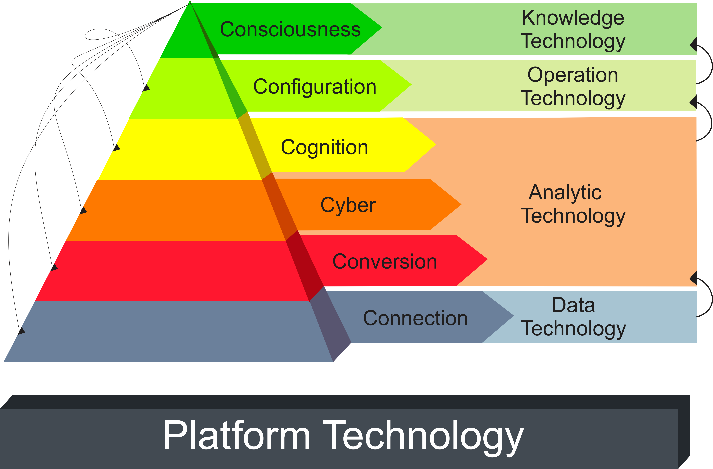
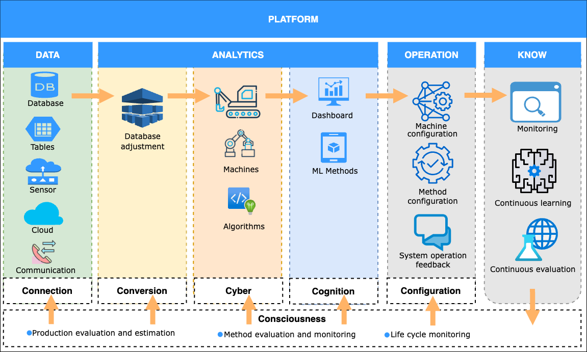

ARCHITECTURE 6C
The 6C Architecture provides a conceptual framework for building intelligent and connected industrial systems. It defines six layers that structure the flow from raw data acquisition to advanced decision-making, ensuring adaptability, traceability, and continuous improvement.
VITA adopts this architecture as a guiding principle, aligning its modular components with each of the six layers.
Conceptual Representation
The classical representation of the 6C model is shown below. It highlights the six layers: Connection, Conversion, Cyber, Cognition, Configuration, and Consciousness.
{kind=link}

Applied Industrial View
Beyond the conceptual pyramid, the 6C Architecture can also be visualized as an operational pipeline, showing how industrial data flows across layers. This representation emphasizes data ingestion, transformation, modeling, decision support, and continuous self-adaptation.
{kind=link}

Mapping to VITA
Each layer of the 6C Architecture corresponds to specific modules within the VITA Platform:
Connection → datasets, services (data ingestion and standardized access)
Conversion → common, preprocessing routines (normalization and preparation)
Cyber → algorithms (LSTM, Reservoir Computing, Hybrid, PyCaret)
Cognition → output_forecasts, performance metrics (knowledge discovery and insights)
Configuration → dashboard (interactive visualization, scenario setup)
Consciousness → log, monitoring (continuous learning, evaluation, auditing, self-adaptation)
This dual perspective (conceptual and applied) shows how VITA is both academically grounded and practically designed, bridging the gap between theory and industrial deployment.